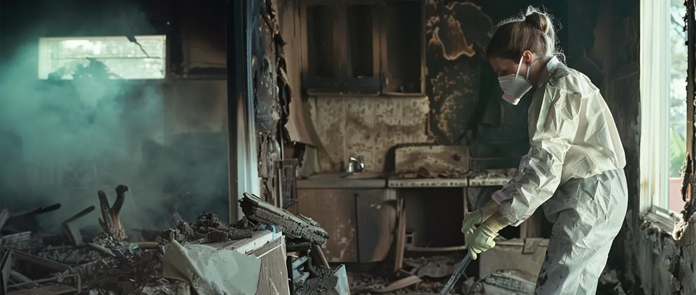

LIMPIEZAS DE INCENDIOS
Especialistas en Limpiezas de incendios - 30 años de experiencia.
LIMPIEZA POST INCENDIO
Con más de 30 años dedicados a la limpieza post-incendio, contamos con un protocolo profesional y perfeccionado que garantiza resultados efectivos.
LIMPIEZAS DE INCENDIOS
Saber más ›
LIMPIEZACON LÁSER
Saber más ›
LIMPIEZA CON HIELO SECO
Saber más ›
SOBRE NANO-NEX
EXPERTOS EN LIMPIEZA POST INCENDIO
Nuestra dedicación al sector de la limpieza post-incendio abarca ya más de tres décadas.
Esta dilatada trayectoria nos ha permitido desarrollar un protocolo profesional que no es fruto del azar, sino de un perfeccionamiento constante a lo largo de los años.
Es esta maestría, forjada por la experiencia, la que nos permite asegurar y garantizar la máxima efectividad en cada intervención, ofreciendo resultados de una solidez incuestionable.
🧐 Nuestra Excelencia en Servicios Especializados
En un ámbito que demanda la máxima precisión, nos hemos consolidado como Especialistas en la Limpieza de Láser. Una técnica avanzada que requiere un savoir-faire único.
Entendemos la sensibilidad de cada situación. Por ello, garantizamos una Confidencialidad y Discreción Absoluta en todos nuestros procesos.
Además, nuestra experiencia se extiende a esferas cruciales para su bienestar y patrimonio:
- Saneamiento Ambiental: Somos expertos en [Eliminar todos los Olores] que se adhieren a su casa, prendas o mobiliario. Nos enfocamos en la raíz del problema.
- Salud y Habitabilidad: Actuamos de manera rigurosa al realizar la [Desinfección de Conductos de Aire Acondicionado], asegurando un ambiente limpio y seguro.
- Trayectoria Sólida: Contamos con una larga trayectoria, que se refleja en nuestros muchos años en la esfera de las Limpiezas Industriales, un campo que exige eficiencia y rigor profesional.

Nano-Nex Servicios de limpiezas de incendios

¿Necesitas una limpieza de Incendios?
Limpieza con láser . Limpieza Criogénicas . Hielo seco . Eliminación de olores . Vertidos accidentales . Olor de humedad
NUESTRAS DELEGACIONES
Encuentra tu delegación más cercana
SERVICIOS
LIMPIEZA POST INCENDIO
LIMPIEZA POST INCENDIO
VIVIENDAS - TALLERES - NEGOCIOS - RESTAURANTES - INDUSTRIAS
LimpiezaS con hielo seco
Servicio especial de limpiezas de incendios con hielo seco
No hablamos de teoría, sino de realidad demostrable: somos Especialistas con más de 30 años de experiencia dedicados exclusivamente a la excelencia en limpieza técnica y saneamiento.
LimpiezaS con láSer
Limpieza con Láser al Metal, Mampostería, Grafitis, Embarcaciones
Limpieza con lázer . Limpieza Criogénicas . Hielo seco . Eliminación de olores . Vertidos accidentales . Olor de humedad
Nº1 EN SERVICIOS DE LIMPIEZA
¿Por qué debería elegirnos para limpiar un incendio?
En NanoNex, entendemos profundamente el impacto: un incendio es devastador. Sabemos que los daños causados por el fuego y el humo convierten un espacio en inseguro e inhabitable, robándole la tranquilidad.
Por ello, hemos convertido nuestra experiencia en su mayor garantía. Contamos con más de 30 años de experiencia en el sector, lo que nos permite ofrecer servicios especializados de Limpieza Post Incendio diseñados no solo para ser rápidos y seguros, sino para restaurar su vivienda y devolverle su funcionalidad con la máxima solvencia.
Usted pone la confianza, nosotros la experiencia de tres décadas.
¿Ha sufrido un incendio en su casa o taller?
✅ NanoNex: Eficiencia y Recuperación Garantizada
En Limpiezas de Incendios NanoNex, nuestra misión es clara: ofrecer soluciones profesionales y expertas de [Limpieza Post Incendio] que aborden todos estos desafíos de manera absolutamente eficiente.
Nuestro compromiso es asegurar que su propiedad no solo quede segura, sino que recupere su estado original en el menor tiempo posible, devolviéndole su espacio con la garantía y la tranquilidad de un trabajo bien hecho.
¿Cuál es el proceso de restauración de daños por incendio?
Los siguientes pasos representan un protocolo Básico a seguir después de un incendio.
¿Cómo eliminar los olores de hollín?
Los productos que contienen fosfato trisódico (TSP) ayudan a eliminar los olores de los textiles; tenga en cuenta que el TSP es cáustico, cuidado.